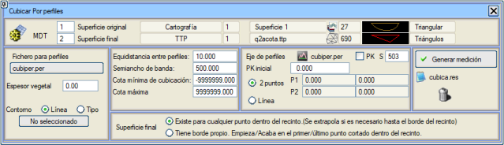
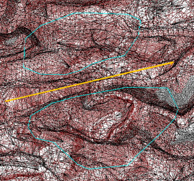
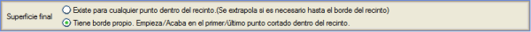
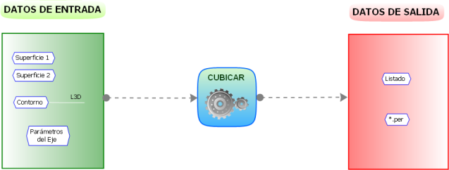
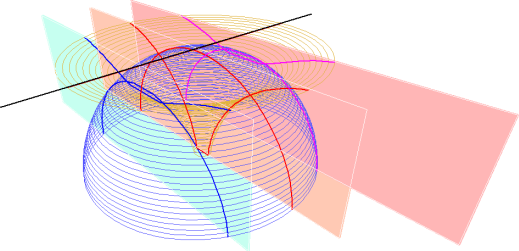
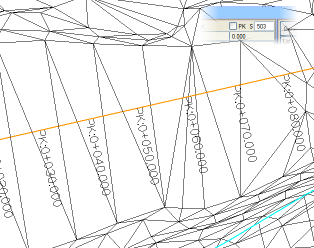

| |
|
ENKESİTLERDEN HACİM HESABI
|
Mevcut en geleneksel hacim hesaplama yöntemlerinden biri enkesitlerden hacim hesabıdır. YÜZEY MODELLEME'den bu seçeneği kullanmak için, önceden en az iki tanımlanmış yüzey ve bir kontur (kapalı çizgi) içeren bir EDM'nin mevcut olması gerekir. 
Konturların içbükeylikleri veya dışbükeylikleri konusunda herhangi bir kısıtlama yoktur. Bir kontur çizgisi her iki yüzeyden hiçbirine ait DEĞİLSE, ikinci yüzeyden çıkarılan kotla bir kopyası oluşturulur ve gerçekten kontur çizgisi olarak kullanılan bu olur. Bu, bir kontur çizgisi tam olarak ikinci yüzeyi tanımlayan çizgilerin çevreleyen konturundan geçtiğinde daha hassas bir hacim hesaplaması yapmayı sağlar.
Kontur nihai yüzeye ait olmadığında, bu yüzeyi dikkate almak için iki seçenek vardır:

Konturun nihai yüzeye ait olmadığı bu durum, kurgusal eksenin yukarıdaki şekildeki gibi iki kapalı alanı kestiği bir örnekte, daha önce açıklanan seçenekler kullanılarak görülebilir. 

Bu veriler girildikten ve [Metraj Oluştur] butonuna basıldıktan sonra, program, profil eksenine veya ana çizgiye dik ve eşit aralıklı dikey düzlemler üzerinde çizilen profilleri hesaplar. Aşağıdaki şema, bir ana çizgiye göre profillerle hacim hesaplama kavramını şematize eder: 
Profillerin oluşturulmasında, varsayılan olarak 505 sembolü ile KM kutucuğu etkinleştirilerek eksenimizin KM'lerini etiketleyebiliriz. Başlangıç KM kutucuğu aracılığıyla, eksenimizin ilk profiline verilen değeri belirleyebiliriz. Hesaplama sırasında, enkesitlerin nasıl oluşturulduğu grafiksel olarak gösterilir. Her biri için program, hesaplamada yer alan iki yüzey üzerindeki profilleri, kapalı alanın içinde kalan bölümde belirler. Kısmi yarma ve dolgu alanları ile birikmiş hacim hesaplanır; bunlar, kullanıcının profil ekseni boyunca hacim hesaplamasının nasıl ilerlediğini görebilmesi için ekranda sunulur. Bu alan ve hacim değerleri, onlara yol açan profillerle birlikte, kullanıcı tarafından tanımlanan .per dosyasında saklanır. Bu dosya, profil editörü tarafından değiştirilmek, yeniden hacim hesaplamak veya grafiksel olarak temsil edilmek üzere işlenebilir ve harita modülünün tüm grafik araçları kullanılabilir. Kaydedilen .per dosyası,  kutucuğuna tıklanarak otomatik bir şekilde düzenlenebilir. kutucuğuna tıklanarak otomatik bir şekilde düzenlenebilir.Aynı anda, toprak işleri modülü, her bir hacim hesaplama profilinin plan izini takip ederek her iki yüzey üzerinde 3D çizgiler oluşturur. 3D kesitlere atanan çizgi tipi, her yüzeyin ilk tipidir. Bu çizgiler, [Geri Al] butonuna basılarak silinebilir. Son olarak, program mesaj alanında, iki yüzey ve kontur tarafından sınırlanan kütle için toplam yarma ve dolgu hacimlerinde somutlaşan nihai sonucu gösterir ve alanların, kısmi hacimlerin ve birikmiş hacimlerin ölçümlerini içeren cubica.res listesini oluşturur; bu listeye [cubica.res Listesi] butonuna basılarak doğrudan erişilebilir. İletişim kutusundan çıkıldığında bu menünün yapılandırması kaybolmaz.
|